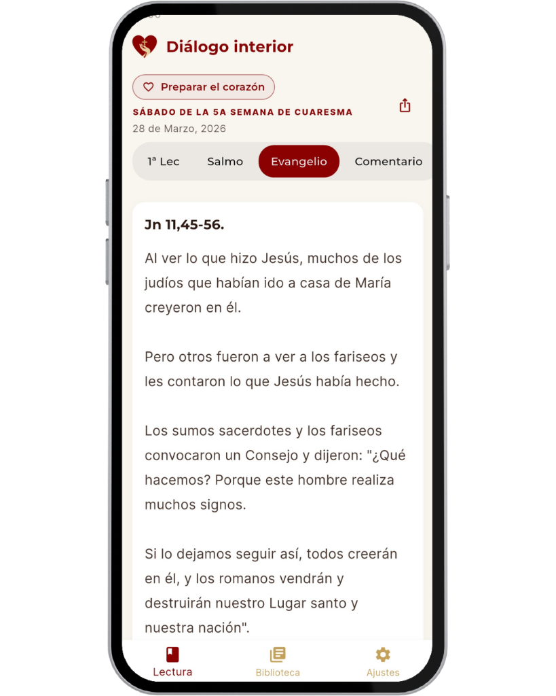
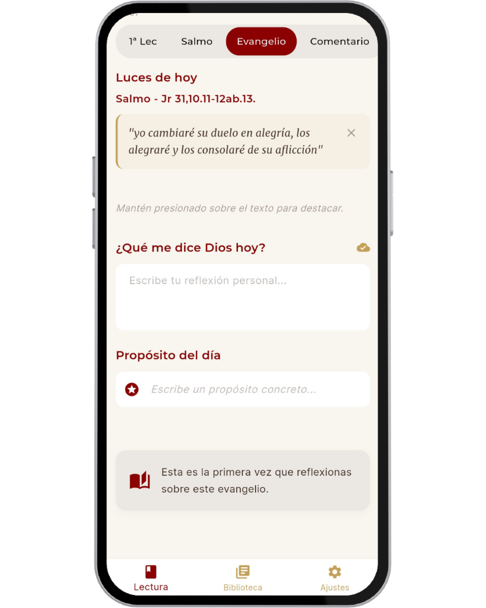
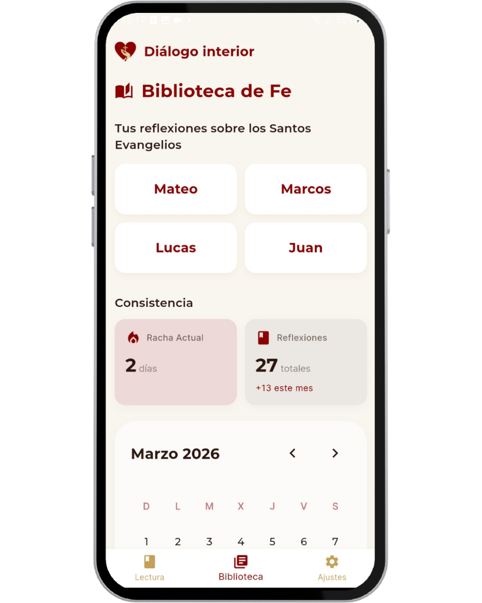

Tu Compañero en el Camino Espiritual
Encontrá a Dios en medio de la rutina. Reflexiones diarias, lecturas y un lugar íntimo para que la Palabra te acompañe adonde vayas.
Herramientas para tu Fe
Descubre las funcionalidades diseñadas para acompañar y fortalecer tu crecimiento espiritual diario.
menu_book Encontrate con la Palabra
Lecturas y comentarios diarios
Arrancá cada jornada con las lecturas del día y una reflexión que te acompañe.
Tus "Luces del Día"
Subrayá y destacá fácilmente esas frases de la lectura que más te tocan el corazón.
Modo Oración
Sumergite en un espacio de lectura inmersivo, totalmente libre de distracciones.
Lectura a tu medida
Cambiá el tamaño de la letra con un toque para que leer sea cómodo y relajante.
edit_square Tu Diario Espiritual
Reflexión y Propósito
Un espacio íntimo para escribir lo que sentís y definir el propósito que guiará tu día.
Memoria Espiritual
Al releer un pasaje del Evangelio, reencontrate con tus anotaciones anteriores para descubrir qué te dijo Dios en aquel momento y cómo sigue obrando en tu historia.
Un viaje en el tiempo
Navegá por el calendario para recordar qué te dijo Dios en momentos anteriores.
Biblioteca por Evangelista
Tus luces y reflexiones organizadas automáticamente por cada Evangelio en un solo lugar.
rocket_launch Llevá tu fe al día a día
Constancia que motiva
Visualizá tu racha de días seguidos para fortalecer tu hábito de lectura y oración.
Tu propósito en pantalla
Widget de inicio para tener tus luces del día siempre a la vista en tu celular.
Compartí tu inspiración
Exportá lecturas y apuntes en PDF o texto plano para enviar a tus amigos o comunidad.
Tu momento de oración, a un toque
Una herramienta simple e intuitiva para registrar tu oración y escuchar lo que Dios te dice.

Lectura Diaria
Las lecturas del día

Tu Diálogo
Un espacio para escribir lo que el Señor te dice al corazón.

Biblioteca Personal
Tus reflexiones guardadas y racha de oración en un solo lugar.
El corazón del proyecto
¡Hola! Soy Valen Francesch. Tengo 20 años, estudio Ingeniería en Sistemas en Argentina y acompaño a grupos de jóvenes organizando actividades que fomentan su desarrollo espiritual y personal. Estoy convencida de que la educación y los valores son pilares fundamentales para la vida. Diálogo Interior nació de unir mis dos grandes pasiones: la tecnología y mi camino de fe. En medio de la rutina acelerada de hoy, buscaba crear un refugio digital en nuestros celulares; un lugar limpio, sin ruido y sin distracciones para poder frenar un ratito a rezar.
La misión de Diálogo Interior
Queremos que conectar con la Palabra de Dios sea algo sencillo y cercano. Nuestra misión es brindarte una herramienta de paz que te acompañe todos los días, ayudándote a atesorar tus reflexiones, guardar tus propósitos y encontrar un momento de silencio en medio del ruido del mundo.
Apoya Nuestra Misión
Diálogo Interior es un proyecto sin fines de lucro dedicado a llevar la palabra de Dios a todos los rincones del mundo. Tu generosidad nos permite mantener la aplicación gratuita, sin publicidad y en constante mejora.

Contacto
¿Tienes alguna duda o sugerencia?
dialogo.interior.app@gmail.com
¿Listo para profundizar en tu fe?
Únete a miles de personas que inician su día en conversación con Dios.